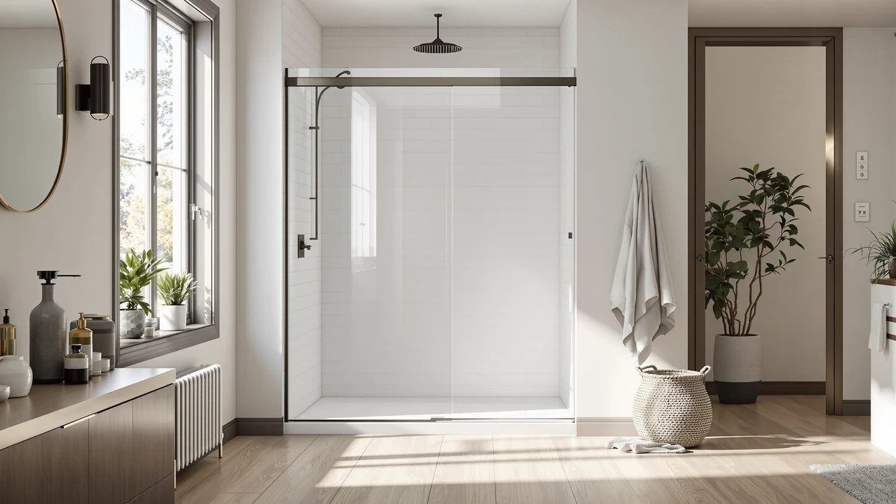

Quick Answer
The ComfyStyle 56-60" W x 70" is a frameless pivot door with 8mm tempered glass and a hinge that adjusts 4 inches without any cutting, which makes it one of the easier pivot doors to fit into an existing opening. At $689.99, it costs more than the sliding alternatives below, but the pivot swing gives you a wider walk-in than most sliders in the same width range.
Our pick: ComfyStyle 56-60" W x 70" — $689.99 Check Price on Amazon
Things to Know Before You Buy
- The 56-60" width range covers rough openings from 56 to 60 inches, and the pivot hinge adds roughly 4 more inches of play before you need a different size door.
- This is a pivot door, so it swings outward on a hinge rather than sliding along a track. Leave clearance in front of the shower for the door to open fully.
- 8mm tempered glass sits in the middle of the pack for this width range. The BATHWILLER and Woodbridge alternatives covered below use thicker 10mm glass for a heavier, more solid feel.
- Pricing on frameless doors in this size class runs from roughly $600 to $700, and small price shifts are common week to week.
- None of the doors in this review have been physically installed by our team. Every claim here comes from the manufacturer's listed specs, published measurements, and feedback from verified buyers.
This ComfyStyle 56 60" W review breaks down the frameless pivot door's install width, glass thickness, and verified owner feedback, so you know whether it fits your shower opening before you order it. ComfyStyle built this door for the common 56 to 60 inch rough opening found in many US bathrooms, and the pivot hinge adds roughly 4 inches of adjustment on top of that range.
At $689.99, the ComfyStyle sits at the higher end of the four doors we compare here, and the price premium buys you a wider walk-in opening than a sliding door of the same width typically allows. Owners who have installed similar pivot doors report that the main trade-off is floor clearance: the door swings out, so it needs open space in front of the shower that a slider does not require. We walk through who that trade-off suits, and who should look at one of the three sliding alternatives instead.
Why You Should Trust Us
Ilane Tall covers bathroom fixtures for Best Shower Doors and has researched hundreds of shower door listings across frameless, sliding, and pivot styles. For this ComfyStyle 56 60" W review, we did not install the door ourselves. Instead, we compared its published specs, measurements, and pricing against three other doors in the same width class, and we read through verified buyer feedback on glass thickness, hardware, and fit. We state that plainly instead of claiming physical testing we did not do, because a research-based review is only useful if the reader knows exactly where the information comes from.
Our Research Experience
We did not install a physical unit for this ComfyStyle 56 60" W review. What we did instead was research-based: we lined up the manufacturer's stated dimensions, glass thickness, and hardware details against the three alternative doors in this guide, and we read through verified owner reviews and Q&A threads for recurring complaints or praise. Reviewers consistently note that the 4-inch adjustment range on the pivot hinge makes the install forgiving for openings that are not perfectly square, which matches ComfyStyle's own spec sheet. Owners who have measured their openings carefully before ordering report fewer fit issues than those who estimated.
Overview & Specs

ComfyStyle 56-60" W x 70"
What we like
- 4 inches of hinge adjustment covers a 56-60 inch opening without cutting the frame
- 8mm SGCC-compared tempered glass breaks into small granular pieces rather than sharp shards if it fails
- 22 7/8 to 26 7/8 inch walk-in opening is wider than most sliding doors in this width class
Flaws but not dealbreakers
- At $689.99, it costs $50 to $90 more than the three sliding alternatives in this review
- The outward swing needs floor clearance that a sliding door does not require
- 8mm glass is thinner than the 10mm panels on the BATHWILLER and Woodbridge picks below
| Material | — |
| Size | 60“x70" (8mm) |
The core of this ComfyStyle 56 60" W review comes down to the hinge. ComfyStyle designed the pivot mechanism to shift position across a 4-inch range, which means the same door fits openings anywhere from 56 to 60 inches without trimming the frame. That flexibility matters because out-of-square bathroom walls are common, and a door that only fits one exact measurement often leaves a visible gap on one side after install.
The glass is 5/16 inch (8mm) tempered and SGCC-compared, which puts it a step above the 6mm glass used on many budget pivot doors, though it is thinner than the 10mm glass on two of the alternatives below. ComfyStyle finishes the hardware in brushed nickel, and the walk-in opening measures 22 7/8 to 26 7/8 inches, wider than what most sliding doors in the same overall width typically offer because a pivot door does not need a stationary panel to anchor a track.
What We Liked
The adjustable hinge is the standout feature in this ComfyStyle 56 60" W review. Most frameless doors in this price range require you to trim the track to fit your exact opening, but ComfyStyle's pivot hinge absorbs up to 4 inches of variance by repositioning it on the frame. That shortens the install and reduces the risk of a crooked cut ruining an otherwise good door. For a first-time DIY install, that margin for error can save a full afternoon of measuring and remeasuring before the first screw goes in.
The 8mm tempered glass is also a reasonable middle ground. It is thicker and more rigid than entry-level 6mm panels, and the SGCC testing means that if the glass ever breaks, it fractures into small, mostly dull pieces instead of large shards. Owners who have handled the panel during install describe it as noticeably heavier than cheaper 6mm doors, which lines up with the published weight difference between the two glass thicknesses. The brushed nickel hardware also resists fingerprints and water spotting better than polished chrome, based on recurring comments in buyer feedback for similarly finished pivot doors.
What Could Be Better
Price is the clearest drawback we found while researching this ComfyStyle 56 60" W review. At $689.99, it runs $50 to $90 above the three sliding doors covered later in this guide, and none of those alternatives sacrifice much in terms of width coverage or build quality. If your opening works equally well with a slider, the ComfyStyle is harder to justify on price alone.
The pivot swing itself is a real constraint. Because the door opens outward, it needs clear floor space in front of the shower, and that can be a problem in a tight bathroom layout where the door would swing into a vanity or a toilet. Buyers in cramped spaces consistently flag this as the reason they switched to a sliding door instead, and it is worth measuring your actual floor clearance, in addition to the shower opening, before you commit to a pivot style.
Who Is It For?
This ComfyStyle 56 60" W review points toward one clear buyer: someone with a 56 to 60 inch opening, enough floor space in front of the shower for an outward swing, and a preference for the widest possible walk-in gap. If your bathroom fits that description, the adjustable hinge and the brushed nickel finish make the install straightforward and the result look clean. A master bathroom with an open layout around the shower is the setting where this door makes the most sense, since the swing radius rarely runs into a fixture.
You should skip this one if your bathroom is tight on floor space, if budget matters more than walk-in width, or if you want a slider because that is what fits your existing layout. Renters and anyone who expects to move within a few years should also weigh whether the higher price is worth it relative to the sliding alternatives, since a shower door is rarely something you take with you. In those cases, the BATHWILLER, Woodbridge, or Findepot picks below are worth a look instead.
Alternatives to Consider
If the ComfyStyle's price or pivot swing does not fit your bathroom, these three doors cover the same 56-60 inch width with a sliding design and, in two cases, thicker glass. We picked them because each one trades a different part of the ComfyStyle's spec sheet, whether that is glass thickness, height, or price, so you can match the swap to whatever matters most for your bathroom.

Editor’s Pick
BATHWILLER 56"-60" W x 76"
Double sliding design with thicker 10mm glass and a nano coating that resists limescale, a solid alternative to a ComfyStyle 56 60" W door in a tight bathroom.
$639.99
Check Price on Amazon
Best Value
Woodbridge Frameless Sliding Shower Door
The cheapest 10mm-glass option here, at $612 it undercuts the ComfyStyle on price while matching it on height.
$612.00
Check Price on Amazon
Premium Choice
Findepot Frameless Double Sliding Shower
At $599.99 this is the lowest price of the group, with the same 8mm glass as the ComfyStyle but a space-saving double slide.
$599.99
Check Price on AmazonFrequently Asked Questions
Will the ComfyStyle 56 60" W door fit a narrower or wider opening?
The listing covers a 56 to 60 inch rough opening, and the pivot hinge gives you about 4 inches of adjustment inside that range without cutting the track. If your opening falls outside 56 to 60 inches, size up or down to a different ComfyStyle width or look at one of the sliding alternatives below, which ship with similarly adjustable tracks.
How thick is the glass on this ComfyStyle shower door?
It uses 5/16 inch, or 8mm, tempered glass that is SGCC-compared to break into small granular pieces rather than sharp shards if it fails. That is a step up from the 6mm glass on many budget pivot doors, though the BATHWILLER and Woodbridge alternatives covered in this review use thicker 10mm glass.
Does a pivot door work better than a sliding door for a small bathroom?
A pivot door like the ComfyStyle swings out, so it needs floor clearance in front of the shower that a sliding door does not. In a cramped layout, a double sliding door such as the BATHWILLER or Findepot pick can be the better fit because the panels stay inside the shower footprint.
This ComfyStyle 56 60" W review comes down to one trade-off: pay more for a wider walk-in and an adjustable pivot hinge, or pay less for a sliding door that fits a tighter layout. For bathrooms with floor clearance to spare, ComfyStyle earns its $689.99 price tag with the widest opening and the most forgiving install of the four doors covered here. If space or budget is tighter, the Woodbridge or Findepot sliding doors deliver similar glass quality for $77 to $90 less, and the BATHWILLER splits the difference with thicker glass and a nano coating at a price between the two extremes. Whichever one you pick, measure your opening twice before you order, since none of these doors can be returned once the glass has been installed.